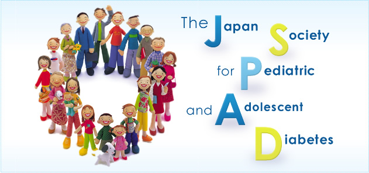

テーマ：第19回 日本小児・思春期糖尿病研究会年次学術集会 ～小児・思春期糖尿病の実臨床を追って～
会期：2013年7月14日（日）
会場：TKPガーデンシティー品川 1階 「ボールルームウェスト」
会長：浦上 達彦 （駿河台日本大学病院小児科）
- 2017/04/09
- 第23回日本小児・思春期糖尿病研究会年次学術集会の演題登録締切を4月17日（月）正午まで延長しました！演題募集要項はこちらからご覧ください。
- 2017/04/03
- 第23回日本小児・思春期糖尿病研究会年次学術集会の事前参加申込みを開始しました！
- 2017/01/25
- 第23回日本小児・思春期糖尿病研究会年次学術集会の演題募集案内（第1報）を掲載しました。
- 2016/07/01
- 第22回日本小児・思春期糖尿病研究会年次学術集会の事前参加登録は締め切りました。多数のお申し込みをいただき、ありがとうございました。
- 2016/06/15
- 第22回日本小児・思春期糖尿病研究会年次学術集会のご案内（第3報）を掲載しました。
- 2016/05/17
- 第22回日本小児・思春期糖尿病研究会年次学術集会のプログラムを掲載しました。
- 2016/05/17
- 第22回日本小児・思春期糖尿病研究会年次学術集会のご案内（第2報）を掲載しました。
- 2016/04/15
- 第22回日本小児・思春期糖尿病研究会年次学術集会の一般演題応募を締め切りました。多数のご応募を頂き、誠にありがとうございました。
- 2016/04/01
- 第22回日本小児・思春期糖尿病研究会年次学術集会の事前参加登録を開始しました！
- 2016/03/30
- 第22回日本小児・思春期糖尿病研究会年次学術集会の演題募集締め切りを4月15日（金）までに延長しました。
- 2016/01/14
- 第22回日本小児・思春期糖尿病研究会年次学術集会の演題募集 案内（第1報）を掲載しました。
- 2015/07/15
- 役員名簿を更新しました。
- 2015/07/13
- 第21回日本小児・思春期糖尿病研究会年次学術集会は盛会裡に終了しました。多数のご参加を頂き、ありがとうございました。
- 2015/07/6
- 第21回日本小児・思春期糖尿病研究会年次学術集会の事前参加登録は締め切りました。当日参加も可能ですので、多数のご参 加をお待ちしております。
- 2015/07/1
- 第21回日本小児・思春期糖尿病研究会年次学術集会の事前参加登録期間を 2015年7月5日（月）まで延長しました！
- 2015/06/24
- 第21回日本小児・思春期糖尿病研究会年次学術集会における日本糖尿病療養指導士更新単位（第2群）1単位が 認定されました。
- 2015/06/24
- 第21回日本小児・思春期糖尿病研究会年次学術集会のプログラムを改定しました。
- 2015/05/16
- 第21回日本小児・思春期糖尿病研究会年次学術集会のプログラムを掲載しました。日本糖尿病学会専門医更新単位3単位が認定されました。
- 2015/04/22
- 第21回年次学術集会の一般演題募集は終了しました。多数のご登録をいただき、誠にありがとうございました。
- 2015/04/12
- 第21回日本小児・思春期糖尿病研究会年次学術集会の演題募集締め切りを4月20日までに延長しました。
- 2015/03/02
- 入会案内ページを開設しました。
- 2015/03/02
- 第21回小児・思春期糖尿病研究会の事前参加登録を開始しました。
- 2015/01/29
- 第21回日本小児・思春期糖尿病研究会年次学術集会の演題募集案内（第1報）を掲載しました。
- 2014/06/03
- 第20回日本小児・思春期糖尿病研究会年次学術集会の事前参加登録案内 および プログラムを掲載しました。
- 2014/04/01
- 第20回日本小児・思春期糖尿病研究会年次学術集会の事前参加申込を開始しました。
- 2014/02/17
- 第20回日本小児・思春期糖尿病研究会年次学術集会の演題募集案内（第1報）を掲載しました。
- 2013/08/02
- 第19回日本小児・思春期糖尿病研究会年次学術集会の終了報告（第4報）を掲載しました。
- 2013/07/09
- 第19回日本小児・思春期糖尿病研究会年次学術集会のプログラム・事前参加登録（第3報）を掲載しました。
- 2013/06/13
- 第19回日本小児・思春期糖尿病研究会年次学術集会において、「日本糖尿病療養指導士認定更新単位 2単位認定（第2群）」を取得いただけます。
- 2013/05/27
- 第19回日本小児・思春期糖尿病研究会年次学術集会のプログラムを掲載いたしました。
- 2013/04/30
- 第19回日本小児・思春期糖尿病研究会年次学術集会の演題募集を締切いたしました。多数のご登録をいただき、誠にありがとうございました。
- 2013/04/15
- 第19回日本小児・思春期糖尿病研究会年次学術集会の参加申し込みを開始しました。
- 2013/04/12
- 第19回日本小児・思春期糖尿病研究会年次学術集会の演題募集締切を延長しました（2013年4月30日まで）。
- 2013/02/27
- 日本小児・思春期糖尿病研究会ホームページを開設いたしました。
〒604－0835
京都市中京区御池通高倉西入ル高宮町219-4F
オフィスミモザ合同会社 内
TEL：075-253-2438 FAX：075-255-6780
E-Mail：jspad@office-mms.jp